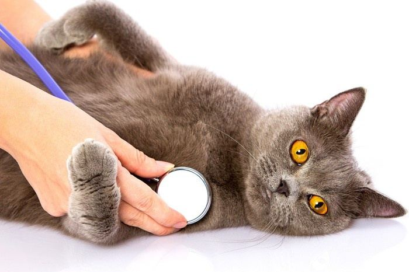

Teljes körű állatorvosi rendelés Pécs‑Hirden
Dr. Hartung István vagyok. Teljes körű állatgyógyászati ellátást nyújtok kutyáknak, macskáknak, vadászgörényeknek és nyulaknak, az oltástól a műtétig. Hétköznap 18 és 20 óra között rendelek, hétvégén egyeztetett időpontban, és kérésre házhoz megyek.
4,9 261 Google-vélemény alapján
Rendelési idő
Hétfőtől péntekig, 18:00 és 20:00 között
Hétvégén egyeztetett időpontban.
- Hétfő18:00–20:00
- Kedd18:00–20:00
- Szerda18:00–20:00
- Csütörtök18:00–20:00
- Péntek18:00–20:00
- Szombategyeztetett időpontban
- Vasárnapegyeztetett időpontban
Hétvégén és házhoz hívásnál telefonon egyeztetünk: 06 30 947 8949
Mire van szüksége?
Válassza ki, kivel és miért jönne. Megmutatom, melyik a legegyszerűbb út: az esti rendelés, a hétvégi időpont vagy a házhoz hívás.
A javasolt út
Esti rendelés a rendelőben
Hétköznap 18:00–20:00
Hozza el kedvencét hétköznap este a Szathmáry utcai rendelőbe.
Amit ehhez kínálok
Esti rendelés
Hétfőtől péntekig 18:00 és 20:00 között, a hirdi rendelőben.
Hétvégi időpont
Szombaton és vasárnap egyeztetett időpontban.
Házhoz hívás
Kérésére házhoz megyek, hogy kedvence a megszokott környezetében kapja meg a kezelést.
Ellátás az oltástól a műtétig
Kutyák, macskák, vadászgörények és nyulak megelőző, diagnosztikai és gyógyító ellátása, az oltástól a műtétig.

Vakcinázás
Valamennyi Magyarországon elérhető vakcina. Az ebeket coronavírus komponenst is tartalmazó kombinált oltóanyaggal oltom; macskáknak kombinált oltások (macskanátha, panleukopenia, leukózis); görényeknek és nyulaknak például veszettség, myxomatózis és vérzéses betegség elleni oltás. A programot az állat életkora és életmódja szerint szabom meg.
Belgyógyászat
Fertőző és nem fertőző betegségek, emésztőrendszeri, légzőszervi, szív- és érrendszeri panaszok, hormonális és anyagcsere-betegségek felismerése és kezelése. Időskori állapotfelmérés és gondozási tanácsadás.
Sebészet
Ivartalanítás kutyáknak, macskáknak, nyulaknak és vadászgörényeknek; lágysebészeti műtétek (sérv, daganat eltávolítása, gyomor-bélrendszeri beavatkozás); sebellátás, sérülések és tályogok kezelése. Biztonságos altatási protokoll, kiemelt figyelem a fájdalomcsillapításra.
Fogászat
Ultrahangos fogkő-eltávolítás, a fogak polírozása és fertőtlenítése, fogászati vizsgálat és szájhigiénés tanácsadás. A fogápolás elhanyagolása súlyos szövődményekhez vezethet, ezért rendszeres kontrollt javaslok.
Szemészet, bőrgyógyászat
Kötőhártya-gyulladás, szaruhártya-sérülés, száraz szem kezelése; allergiás reakciók, bakteriális, gombás és parazitás bőrbetegségek. Szükség esetén speciális laborvizsgálat és bőrkaparék-elemzés.
Állatútlevél
Ha kedvencével külföldre utazna, érvényes állatútlevél kell, benne a kötelező oltásokkal és az azonosító adatokkal. A rendelőben gyorsan kiállítom.
Mikrochip
Fájdalommentes beültetés és regisztráció az országos adatbázisban, hogy egy elveszett kedvenc azonosítható és visszajuttatható legyen. Kutyáknak kötelező, macskáknak erősen ajánlott.
Laborvizsgálatok
Általános vérkép és biokémiai paraméterek, vizelet- és székletvizsgálat, hormon- és allergiavizsgálat. Segítenek a betegségek korai felismerésében és a hatékony kezelésben.
Egy orvos, akit a gazdik évtizedek óta ismernek
Pécs-Hirden, a Szathmáry György utcában rendelek. Célom, hogy kis kedvence a lehető legjobb ellátást kapja, legyen szó megelőzésről, diagnosztikáról vagy gyógykezelésről.
Mivel este rendelek, munka után is el tudja hozni kedvencét, és ha ez nem megy, megbeszéljük a hétvégi időpontot vagy a házhoz hívást.
A negyedik kutyánk kezelőorvosa, lassan 30 éve csak benne bízom.”
„SOS helyzetben is nyugodt, végtelenül kedves és profi. Nekünk egy nagyon ijesztő epilepsziás rohamban tudott azonnali segítséget nyújtani, amit hálásan köszönünk.”
„Kedves és odaszánt állatorvos. Az eb érdekét nézi.”
261 Google-vélemény átlaga
Összes vélemény a Google-onGyakori kérdések
Ha nem találja a választ, hívjon: 06 30 947 8949
Mikor rendel Dr. Hartung István?
Hétfőtől péntekig 18:00 és 20:00 óra között rendelek. Szombaton és vasárnap a rendelő zárva van, de egyeztetett időpontban hétvégén is rendelek.
Kijön házhoz az állatorvos?
Igen, kérésére házhoz megyek, hogy kedvence a megszokott környezetében kapja meg a szükséges kezelést. Hívjon a +36 30 947 8949-es számon.
Milyen állatokat lát el a rendelő?
Kutyákat, macskákat, vadászgörényeket és nyulakat.
Milyen oltásokat kaphat a kedvencem?
Valamennyi Magyarországon elérhető vakcinát biztosítom kutyák, macskák, vadászgörények és nyulak részére. Az ebeket coronavírus komponenst is tartalmazó kombinált oltóanyaggal oltom. A vakcinázási programot minden állatra egyedileg szabom meg, az életkora és az életmódja szerint.
Lehet állatútlevelet és mikrochipet csináltatni?
Igen. A rendelőben kiállítom az állatútlevelet, és beültetem a mikrochipet, az állat adatait pedig regisztrálom az országos adatbázisban. A mikrochip kutyáknak kötelező, macskáknak erősen ajánlott.
Van ultrahangos fogkő-eltávolítás?
Igen, ultrahangos fogkő-eltávolítást, a fogak polírozását és fertőtlenítését, valamint fogászati vizsgálatot és szájhigiénés tanácsadást is vállalok.
Hol van a rendelő?
Pécs-Hirden, a Szathmáry György utca 32. alatt (7693 Pécs).
Kapcsolat
Hétvégén egyeztetett időpontban